Dowker's theorem for higher-order relations
Vin de Silva, Chad Giusti, Vladimir Itskov, Michael Robinson, Radmila Sazdanovic, Nikolas Schonsheck, Melvin Vaupel, and Iris Yoon
Journal of Applied and Computational Topology 10 (2), 2026
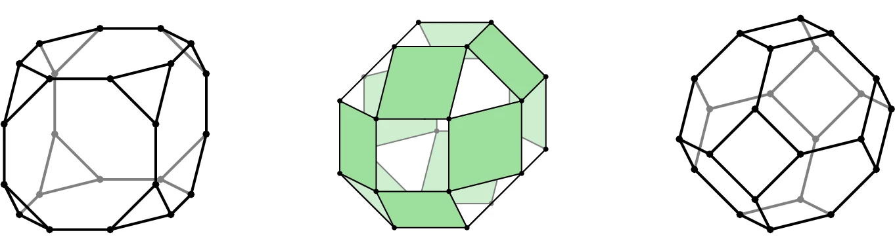
The applied topology group at Oregon State University employs topology to investigate a variety of complex systems. Our work includes:
We develop new mathematical frameworks and computational tools for the study of complex systems through the modern language of shape. We are particularly interested in methods that will allow us to address fundamental scientific questions, and in understanding how and why topological structure arises so often in the natural world.
In collaboration with experimental neuroscientists, we study the structure and function of in vivo and simulated neural systems with the goal of developing fundamental theory about the encoding of information and performance of computations in the brain.
However, we are always interested in Other Applications across a range of disciplines.
The Applied Topology Group is grateful to the National Science Foundation, the Air Force Office of Scientific Research, and the Air Force Research Laboratory for their prior support of our work, and to Oregon State University for their ongoing support for our work.
Due to computational limitations and underdeveloped mathematics, early applications of persistent homology have largely focused on statistics of persistence diagrams. Interpretation in terms of the original systems from which they were computed is usually ad hoc and prone to subtle errors. In our view, these difficulties have inhibited wide-spread application of topological methods in the sciences. One of our primary aims is thus developing rigorous, formal workflows that connect quantitative topological measures and the structure of the system they represent. Our recent work includes the Open Applied Topology software package, which provides full access to the algebraic structures underlying persistence; a user's guide for optimizing persistent cycle representatives; and, the method of analogous cycles, which matches persistent homology classes across systems using observed cross-dissimilarities.
Dowker's theorem for higher-order relations
Vin de Silva, Chad Giusti, Vladimir Itskov, Michael Robinson, Radmila Sazdanovic, Nikolas Schonsheck, Melvin Vaupel, and Iris Yoon
Journal of Applied and Computational Topology 10 (2), 2026

Persistent extensions and analogous bars: data-induced relations between persistence barcodes
Hee Rhang Yoon, Robert Ghrist & Chad Giusti
Journal of Applied and Computational Topology 7 (3), 2023
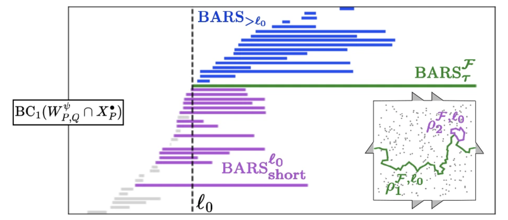
Open Applied Topology
Based on the ExHACT project by Gregory Henselman-Petrusek, Lori Ziegelmeier, Chad Giusti
primarily supported and maintained by Pacific Northwest National Laboratory
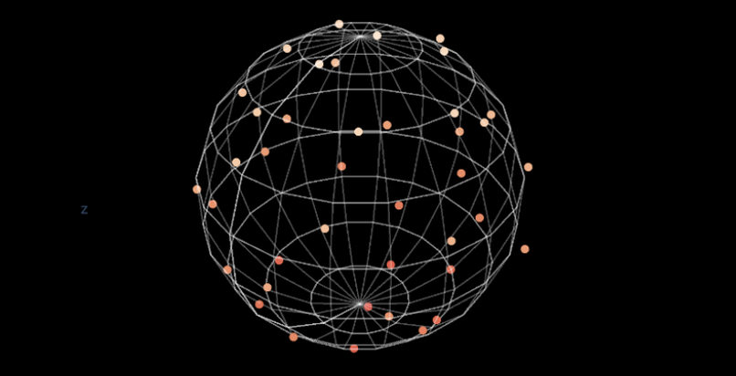
Minimal Cycle Representatives in Persistent Homology Using Linear Programming: An Empirical Study With User's Guide
Lu Li, Connor Thompson, Gregory Henselman-Petrusek, Chad Giusti, Lori Ziegelmeier
Frontiers in Artificial Intelligence 4, 2021
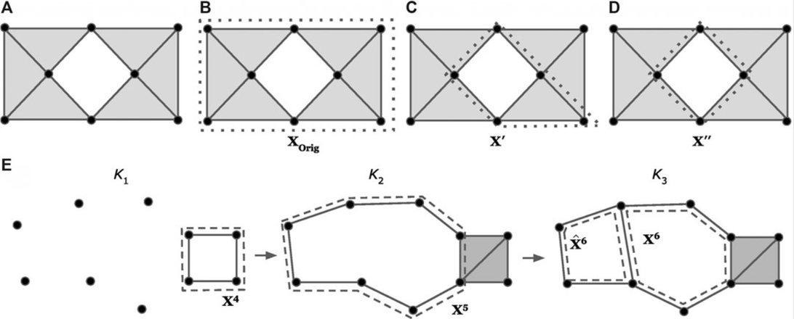
Eulerian Magnitude Homology: Subgraph Structure and Random Graphs
Chad Giusti and Giuliamaria Menara
arXiv:2403.09248, 2024
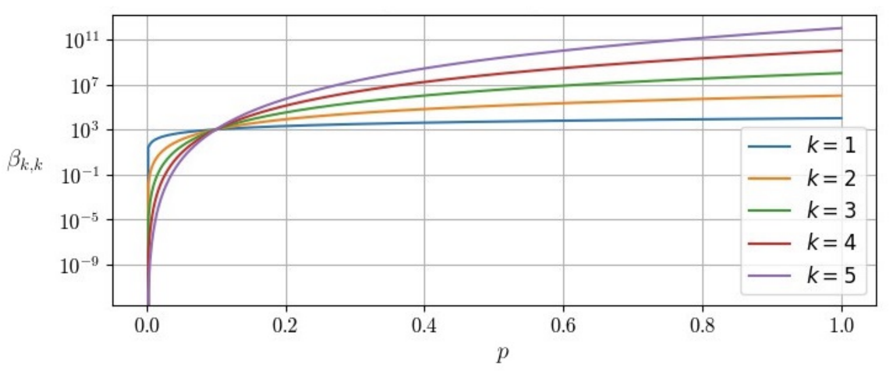
Persistent homology characterizes structure in filtered spaces. However, some data are better described in terms of functions into a state space. Function spaces are a topic of classical study in algebraic topology, and Chen's iterated integral framework for cochains on mapping spaces, recently recast as the Path Signature in the study of SDEs and ML, provides a well-founded and robust framework for studying such data. We have applied this framework to the study of time-varying persistence diagrams; and, to describe the algebraic properties of the signature transform for higher-dimensional domains.
A topological approach to mapping space signatures
Chad Giusti, Darrick Lee, Vidit Nanda, Harald Oberhauser
Advances in Applied Mathematics 163, 2025
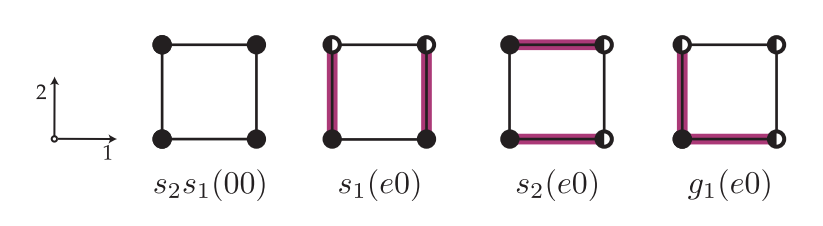
Signatures, Lipschitz-Free Spaces, and Paths of Persistence Diagrams
Chad Giusti and Darrick Lee
SIAM Journal on Applied Algebra and Geometry 7 (4), 2023
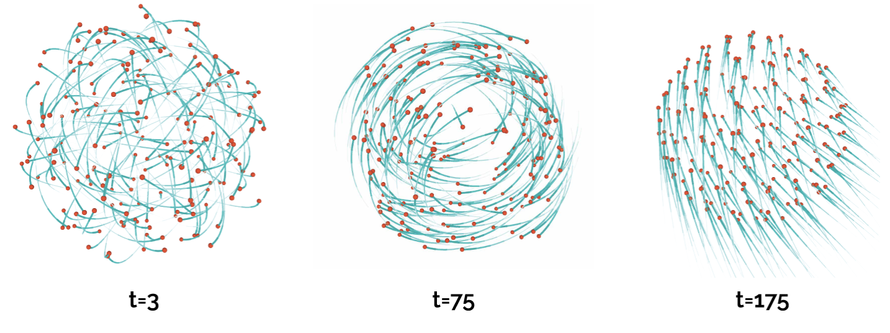
Iterated Integrals and Population Time Series Analysis
Chad Giusti and Darrick Lee
Topological Data Analysis (Abel Symposia 15), Springer, 2020
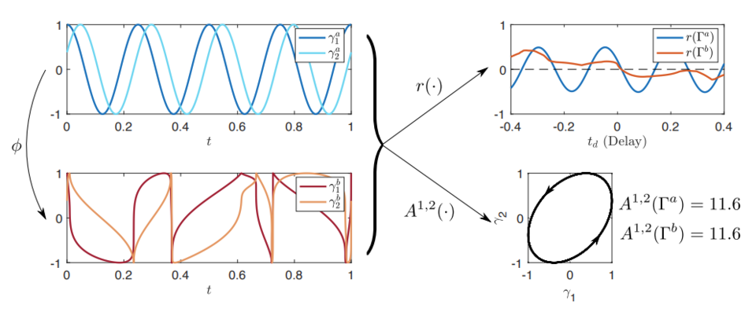
Two's Company, Three's a Simplex
Chad Giusti, Robert Ghrist & Danielle S. Bassett
Journal of Computational Neuroscience 41 (1), 2016
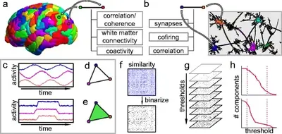
Topological Neuroscience: Linking Circuits to Function
Carina Curto and Nicole Sanderson
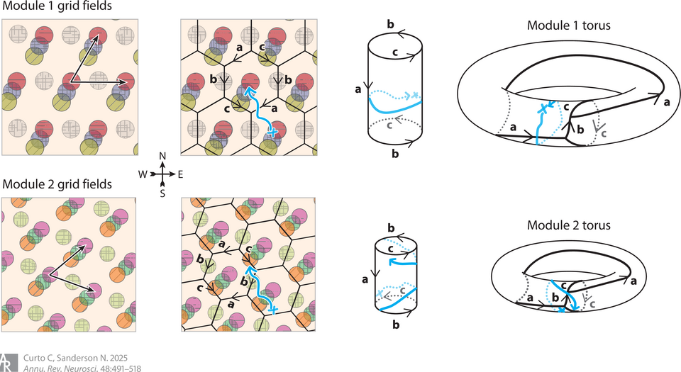
What can topology tell us about the neural code?
Carina Curto
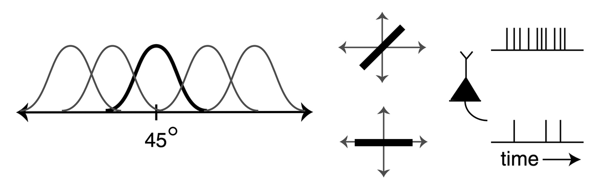
Importance of the whole: Topological data analysis for the network neuroscientist
Ann E. Sizemore, Jennifer E. Phillips-Cremins, Robert Ghrist, Danielle S. Bassett
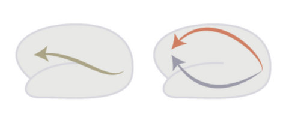
Topological Adventures in Neuroscience
Kathryn Hess
A hands-on tutorial on network and topological neuroscience
Eduarda Gervini Zampieri Centeno, Giulia Moreni, Chris Vriend, Linda Douw & Fernando Antônio Nóbrega Santos
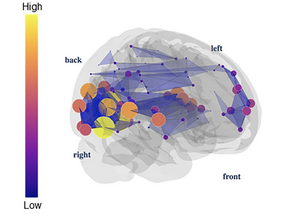
Our recent work has been focused on implications for neural computation of the classical nerve theorem of algebraic topology. In context, it effectively tells us that we can use observations of neural activity to reconstruct the topology (and some geometry) of the information encoded by a neural population. This purely mathematical fact is the reason for the appearance of so-called neural manifolds, low-dimensional subspaces of the space of population neuron activation profiles, along which activity is constrained.
In his postdoctoral work, the PI demonstrated that topological measurements of neural population activity alone were sufficient to detect or falsify the presence of a neural manifold, without reference to external stimulus or behavior. In the interim, we have been interested in understanding how these objects arise as a result of neural activity, and developing a mathematical framework for understanding the resulting computational model at the level of neural manifolds, rather than individual or collective neuronal activity. In recent work, we have constructed a method for comparing topological features across neural manifolds, or between neural manifolds and observed stimuli and behaviors; and described combinatorial foundations of convex coding, which underlies such receptive field models of neural activity.
Tracking the topology of neural manifolds across populations
Iris H.R. Yoon, Gregory Henselman-Petrusek, Yiyi Yu, Robert Ghrist, Spencer LaVere Smith, and Chad Giusti
PNAS 121 (46), 2024
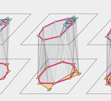
A No-Go Theorem for One-Layer Feedforward Networks
Chad Giusti and Vladimir Itskov
Neural Computation 26 (11), 2014
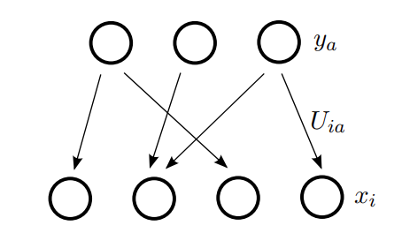
On Open and Closed Convex Codes
Joshua Cruz, Chad Giusti, Vladimir Itskov, and Bill Kronholm
Discrete & Computational Geometry 61 (2), 2019
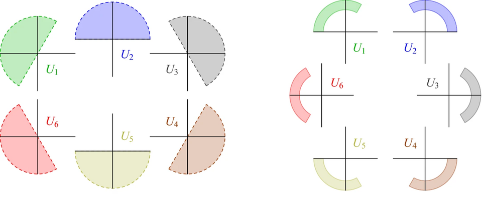
The tools we develop are not specific to neuroscience. Working with collaborators in physics, cognitive science, geography, and cell biology, we have used topological and geometric measures to study force chains in granular materials under compression, the growth of semantic networks as children learn words, maps and networks for disaster preparation and response, single-cell proteomic profiles of differentiating neurons, and the classification of networks through the lens of homology.
Leveraging Topological Data Analysis for disaster preparation and response, a cartographic perspective
Connor Progin, Carolyn Fish, Chad Giusti, David Retchless, Courtney Thatcher, and Jim Thatcher
Abstracts of the International Cartographic Association 10, 2025
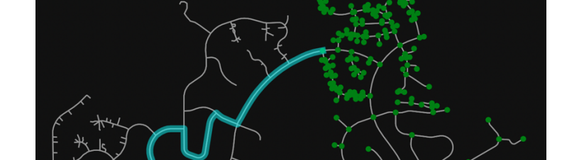
Single-Cell Proteomics Reveals Proteome Remodeling and Cellular Heterogeneity During NGF-Induced PC12 Neuronal Differentiation
Arpa Ebrahimi, Shuxin Chi, Jun Yang, Phoebe Y. Lee, Prongbaramee K. Colling, Hailey Mendenhall, Chad Giusti, David A. Hendrix, Leonard J. Foster, and Claudia S. Maier
ACS Chemical Neuroscience 17 (15), 2026
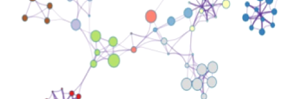